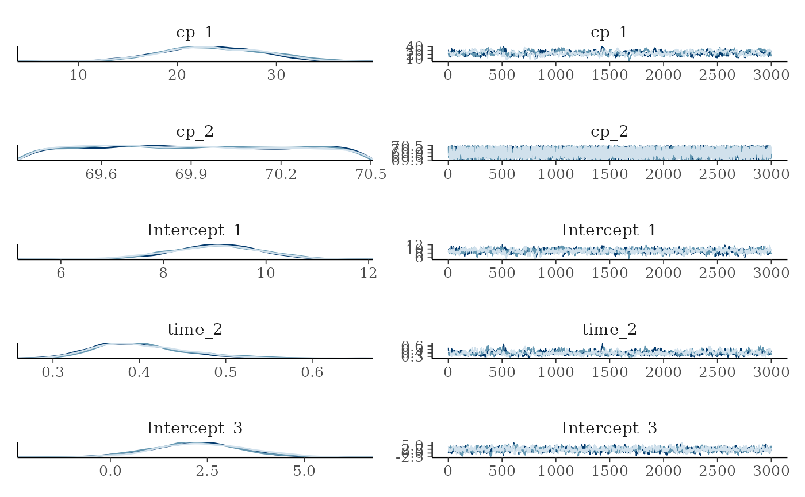
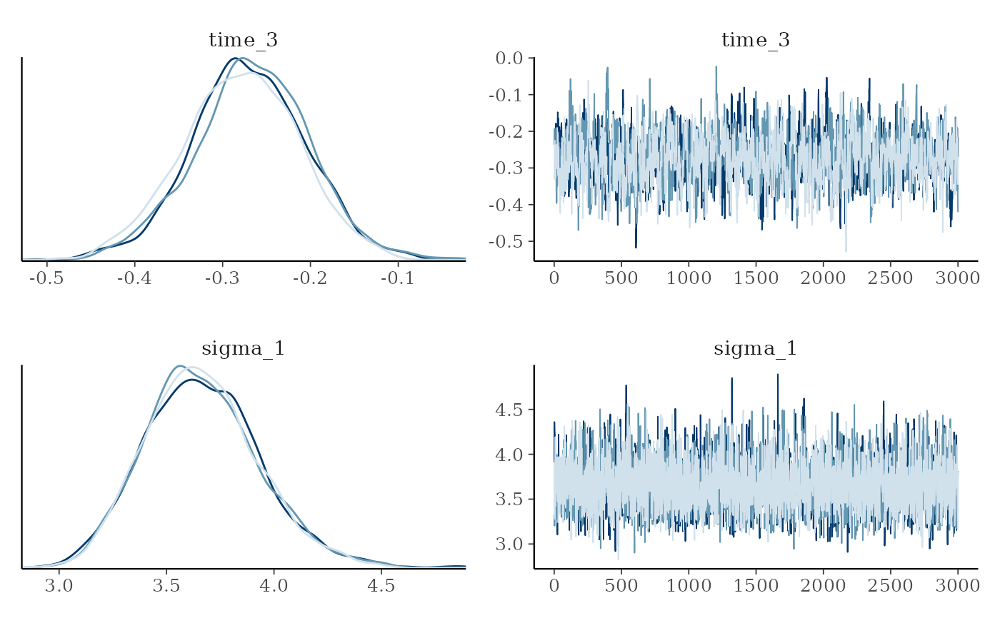
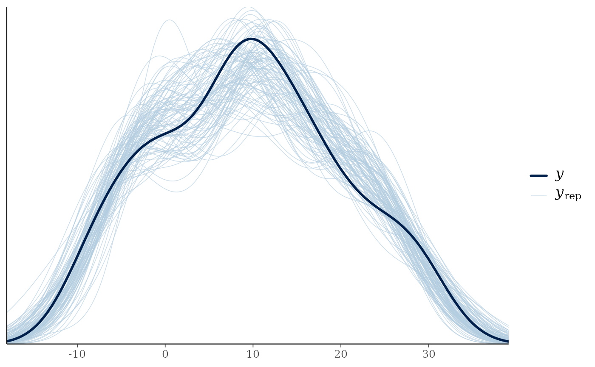

Given a model (a list of segment formulas), mcp infers the posterior
distributions of the parameters of each segment as well as the change points
between segments. See more details and worked examples on the mcp website.
All segments must regress on the same x-variable. Change
points are forced to be ordered using truncation of the priors. You can run
fit = mcp(model, data, sample=FALSE) to avoid sampling if you just want to
inspect the priors (fit$prior and prior_summary()), the JAGS code
fit$jags_code, or the R function to simulate data (fit$simulate).
Arguments
- model
A list of formulas - one for each segment. The first formula has the format
response ~ predictorswhile the following formulas have the formatresponse ~ cp ~ predictors. Here,cpnames the change-point part of the formula rather than a literal variable. The response and change-point parts can be omitted (cp ~ predictorassumes the same response;~ predictorassumes an intercept-only change point). The following can be modeled:Regular formulas: e.g.,
~ 1 + x). Read more.Extended formulas:, e.g.,
~ x:group + I(x^2) + exp(z). Read more.Group-level effects: e.g.,
~ 1 + (1 | id)for a group-level intercept, or~ 1 + (factor || id)for independent intercept and factor-contrast deviations. Read more.Variance: e.g.,
~sigma(1)for a simple variance change or~sigma(1 + x + group)) for more advanced variance structures. Explicit sigma formulas model log-SD, while the implicit constantsigma_1in a model withoutsigma()remains on the response scale. Read moreTime-series residuals: use
ar(p)andma(q)separately or together, e.g.,~ 1 + ar(1) + ma(1). Both accept an optional regression formula and observationboundary. GARMA terms support Gaussian, binomial, Poisson, and negative-binomial families with their default links. They define a finite conditional recurrence and do not jointly constrain AR coefficients to stationarity or MA coefficients to invertibility. Read more
- data
Table-like data in long format (data.frame, tibble, data.table, etc.)
- prior
Named list. Names are parameter names (
cp_i,Intercept_i,xvar_i, `sigma“) and the values are eitherA JAGS distribution (e.g.,
Intercept_1 = "dnorm(0, 1) T(0,)") indicating a conventional prior distribution. Uninformative priors based on data properties are used where priors are not specified. This ensures good parameter estimations, but it is a questionable for hypothesis testing.mcpuses SD (not precision) for dnorm, dt, dlogis, etc. See details. Change points are forced to be ordered through the priors using truncation, except for uniform priors where the lower bound should be greater than the previous change point,dunif(cp_1, max(time)).A numerical value (e.g.,
Intercept_1 = -2.1) indicating a fixed value.A model parameter name (e.g.,
Intercept_2 = "Intercept_1"), indicating that this parameter is shared - typically between segments. If two varying effects are shared this way, they will need to have the same grouping variable.A scaled Dirichlet prior is supported for change points if they are all set to
cp_i = "dirichlet(N)whereNis the alpha for this change point andN = 1is most often used. This prior is less informative about the location of the change points than the default uniform prior, but it samples less efficiently, so you will often need to setiterhigher. It is recommended for hypothesis testing and for the estimation of more than 5 change points. Read more.
- family
One of
gaussian(),binomial(),bernoulli(),poisson(), ornegbinomial(). with a supported link function, e.g.,gaussian(link = "log").- par_x
String (default:
NULLwhich is auto-detect).- sample
One of
"post": Sample the posterior."prior": Sample only the prior. Plots, summaries, etc. will use the prior. This is useful for prior predictive checks."both": Sample both prior and posterior. Plots, summaries, etc. will default to using the posterior. The prior only has effect when doing Savage-Dickey density ratios inhypothesis."none"orFALSE: Do not sample. Returns an mcpfit object without sample. This is useful if you only want to check prior strings (fit$prior), the JAGS model (fit$jags_code), etc.
- cores
Deprecated and ignored. Configure parallel processing with a future plan instead, for example
future::plan(future::multisession, workers = 3). With the default future plan, chains are sampled sequentially. The argument remains available for backwards compatibility.- chains
Positive integer. Number of chains to run.
- iter
Positive integer. Number of post-warmup draws from each chain. The total number of draws is
iter * chains.- adapt
Positive integer. Also sometimes called "burnin", this is the number of samples used to reach convergence. Set lower for greater speed. Set higher if the chains haven't converged yet or look at tips, tricks, and debugging.
- inits
A list if initial values for the parameters. This can be useful if a model fails to converge. Read more in
jags.model. Defaults toNULL, i.e., no inits.- jags_code
String. Pass JAGS code to
mcpto use directly. This is useful if you want to tweak the code infit$jags_codeand run it within themcpframework.- seed
NULLor a positive integer. Seed for the JAGS random-number generators. When supplied,initsmust be a single named list shared by all chains.- warn
Logical. Warn about non-convergence (
Rhat > 1.01orESS < 400) after sampling? Defaults toTRUE.
Value
An mcpfit object.
Details
Notes on priors:
Order restriction is automatically applied to cp_\* parameters using truncation (e.g.,
T(cp_1, )) so that they are in the correct order on the x-axis UNLESS you do it yourself. The one exception is for dunif distributions where you have to do it as above.Data-dependent prior values can be written directly, for example
min(time),max(time),median(response),mad(response),max(time) - min(time),segment_width(time),n_segments(), andn_cp(). They are resolved from the model data before JAGS code is generated. The older constantsMINX,MAXX,MEANX,SDX,MINY,MAXY,MEANY,SDY, andN_CPremain accepted with a deprecation warning.Use SD when you specify priors for dt, dlogis, etc. JAGS uses precision but
mcpconverts to precision under the hood via the sd_to_prec() function. So you will see SDs infit$priorbut precision ($1/SD^2) infit$jags_code. Useprior_summary(fit)for resolved priors andprior_summary(fit, verbose = TRUE)for their rules and descriptions.
Author
Jonas Kristoffer Lindeløv jonas@lindeloev.dk
Examples
# \donttest{
# Define the segments using formulas. A change point is estimated between each formula.
model = list(
response ~ 1, # Plateau in the first segment (Intercept_1)
~ 0 + time, # Joined slope (time_2) at cp_1
~ 1 + time # Disjoined slope (Intercept_3, time_3) at cp_2
)
# Fit it and sample the prior too.
# future::plan(future::multisession, workers = 3) # Uncomment for parallel sampling
data = mcp_example_data("demo") # Simulated data example
demo_fit = mcp(model, data = data, sample = "both", seed = 42)
#> Compiling model graph
#> Resolving undeclared variables
#> Allocating nodes
#> Graph information:
#> Observed stochastic nodes: 100
#> Unobserved stochastic nodes: 7
#> Total graph size: 2139
#>
#> Initializing model
#>
#> Finished sampling in 4.3 seconds
#> Warning: Some parameters may not have converged well:
#> * ess_bulk or ess_tail < 400: cp_1 and time_2
#> Inspect `summary(fit)` and `plot_pars(fit)`, and consider increasing `iter`/`adapt` or simplifying the model before trusting these results.
#> Compiling model graph
#> Resolving undeclared variables
#> Allocating nodes
#> Graph information:
#> Observed stochastic nodes: 0
#> Unobserved stochastic nodes: 107
#> Total graph size: 2139
#>
#> Initializing model
#>
#> Finished sampling in 0 seconds
# See parameter estimates
summary(demo_fit)
#> Family: gaussian(link = 'identity')
#> Iterations: 3000 from 3 chains.
#> Segments:
#> 1: response ~ 1
#> 2: response ~ 1 ~ 0 + time
#> 3: response ~ 1 ~ 1 + time
#>
#> Population-level parameters:
#> name match sim mean lower upper Rhat ess_bulk ess_tail
#> cp_1 OK 30.0 23.64 13.97 33.53 1 325 609
#> cp_2 OK 70.0 69.91 69.35 70.48 1 5002 7382
#> Intercept_1 OK 10.0 9.00 7.12 10.70 1 593 1086
#> time_2 OK 0.5 0.40 0.31 0.52 1 338 745
#> Intercept_3 OK 0.0 2.28 -0.11 4.75 1 882 1576
#> time_3 OK -0.2 -0.27 -0.40 -0.14 1 888 1485
#> sigma_1 OK 4.0 3.66 3.19 4.23 1 4394 4434
#>
#> Warning: 2 parameters show poor convergence (Rhat > 1.01 or ESS < 400).
# Visual inspection of the results
plot(demo_fit) # Visualization of model fit/predictions
 plot_pars(demo_fit) # Parameter distributions
plot_pars(demo_fit) # Parameter distributions


pp_check(demo_fit) # Prior/Posterior predictive checks

# Test a hypothesis
hypothesis(demo_fit, "cp_1 > 10")
#> hypothesis mean lower upper p BF
#> 1 cp_1 - 10 > 0 13.64073 3.968461 23.5295 0.9961111 56.05727
# Make predictions
fitted(demo_fit)
#> time fitted error Q2.5 Q97.5
#> 1 91.48060435 -3.58177167 0.7377092 -5.0369166 -2.136185078
#> 2 93.70754133 -4.18663624 0.8229676 -5.8000194 -2.578335464
#> 3 28.61395348 10.99847716 1.0454974 9.0298867 12.926245675
#> 4 83.04476261 -1.29048914 0.6555524 -2.5825787 0.001395277
#> 5 64.17455189 25.06728441 0.8974234 23.3106805 26.832652524
#> 6 51.90959491 20.13626934 0.6121620 18.8942292 21.320944013
#> 7 73.65883146 1.25884982 1.0133469 -0.7324724 3.281362860
#> 8 13.46665972 9.01178785 0.8946138 7.2021459 10.703562989
#> 9 65.69922904 25.68026708 0.9591454 23.8162551 27.577103977
#> 10 70.50647840 2.11506924 1.1826278 -0.2107569 4.479882583
#> 11 45.77417762 17.66958028 0.6979887 16.1664000 18.912282371
#> 12 71.91122517 1.73352205 1.1055873 -0.4378592 3.946531709
#> 13 93.46722472 -4.12136317 0.8129261 -5.7140051 -2.535619335
#> 14 25.54288243 10.13676462 0.8796444 8.5152708 11.913561769
#> 15 46.22928225 17.85255098 0.6865419 16.3874428 19.086127590
#> 16 94.00145228 -4.26646621 0.8354914 -5.9055224 -2.629916323
#> 17 97.82264284 -5.30435045 1.0179337 -7.3081175 -3.308688944
#> 18 11.74873617 9.00528929 0.9038978 7.1460175 10.703562989
#> 19 47.49970816 18.36331423 0.6583805 16.9758240 19.580548050
#> 20 56.03327462 21.79415749 0.6496364 20.5025137 23.048320533
#> 21 90.40313873 -3.28911822 0.7037443 -4.6650442 -1.900759176
#> 22 13.87101677 9.01452374 0.8909753 7.2212608 10.703562989
#> 23 98.88917289 -5.59403365 1.0738462 -7.7040468 -3.494178153
#> 24 94.66682326 -4.44718948 0.8647724 -6.1395611 -2.755234940
#> 25 8.24375581 9.00046241 0.9132016 7.1219249 10.703562989
#> 26 51.42117843 19.93990591 0.6129305 18.6939174 21.127435456
#> 27 39.02034671 14.95441085 0.9287282 12.7743118 16.466218202
#> 28 90.57381309 -3.33547556 0.7087602 -4.7179098 -1.939874062
#> 29 44.69696281 17.23649580 0.7276639 15.6404966 18.508719944
#> 30 83.60042600 -1.44141442 0.6467798 -2.7117046 -0.163666778
#> 31 73.75956178 1.23149018 1.0081729 -0.7529938 3.239939875
#> 32 81.10551413 -0.76376444 0.7004117 -2.1288621 0.620705590
#> 33 38.81082828 14.87026144 0.9368677 12.6624683 16.389831652
#> 34 68.51697294 26.81311554 1.0804025 24.7094379 29.008618294
#> 35 0.39483388 8.99910859 0.9166484 7.1189326 10.703562989
#> 36 83.29160803 -1.35753551 0.6514165 -2.6435215 -0.069412202
#> 37 0.73341469 8.99910859 0.9166484 7.1189326 10.703562989
#> 38 20.76589728 9.30789741 0.7630185 7.8378530 10.827638588
#> 39 90.66014078 -3.35892327 0.7113513 -4.7474880 -1.957809935
#> 40 61.17786434 23.86249328 0.7870792 22.2986318 25.408283048
#> 41 37.95592405 14.52698540 0.9704692 12.2281536 16.087694010
#> 42 43.57715850 16.78628860 0.7619835 15.0857657 18.085067034
#> 43 3.74310329 8.99910859 0.9166484 7.1189326 10.703562989
#> 44 97.35399138 -5.17705872 0.9939378 -7.1302861 -3.235931243
#> 45 43.17512489 16.62465462 0.7750808 14.8762974 17.939915668
#> 46 95.75765966 -4.74347460 0.9152861 -6.5315707 -2.957460766
#> 47 88.77549055 -2.84702816 0.6636018 -4.1461354 -1.526696573
#> 48 63.99787695 24.99625385 0.8904848 23.2532518 26.746003763
#> 49 97.09666104 -5.10716450 0.9809248 -7.0369074 -3.191123183
#> 50 61.88382073 24.14631666 0.8115328 22.5380453 25.736639023
#> 51 33.34272113 12.69759032 1.1118426 10.2490972 14.493075274
#> 52 34.67482482 13.21859310 1.0832440 10.7092507 14.951301421
#> 53 39.84854114 15.28723170 0.8962969 13.2030466 16.757965294
#> 54 78.46927757 -0.04772887 0.7908909 -1.6001028 1.503683329
#> 55 3.89364911 8.99910934 0.9166458 7.1189326 10.703562989
#> 56 74.87953862 0.92729015 0.9518625 -0.9349008 2.820731089
#> 57 67.72768302 26.49578866 1.0456314 24.4588943 28.606150437
#> 58 17.12643304 9.07436884 0.8373061 7.4220749 10.705154446
#> 59 26.10879638 10.27687702 0.9119314 8.6153830 12.095640199
#> 60 51.44129347 19.94799297 0.6128766 18.7038967 21.135328983
#> 61 67.56072745 26.42866569 1.0383504 24.4050780 28.516838423
#> 62 98.28171979 -5.42904162 1.0417888 -7.4777650 -3.390272636
#> 63 75.95442676 0.63533678 0.9001851 -1.1208307 2.415197408
#> 64 56.64884241 22.04164095 0.6614820 20.7199242 23.316586725
#> 65 84.96897186 -1.81312899 0.6337121 -3.0587070 -0.564056439
#> 66 18.94739354 9.15893934 0.7955314 7.6025911 10.730915299
#> 67 27.12866147 10.55094075 0.9700564 8.7761409 12.432510958
#> 68 82.81584852 -1.22831315 0.6597223 -2.5263769 0.072894524
#> 69 69.32048204 27.13615911 1.1163525 24.9793470 29.424074087
#> 70 24.05447396 9.80735633 0.8082024 8.3087970 11.447985660
#> 71 4.29887960 8.99912309 0.9165984 7.1189326 10.703562989
#> 72 14.04790941 9.01599354 0.8890921 7.2315973 10.703562989
#> 73 21.63854151 9.40977757 0.7586773 7.9576206 10.908911874
#> 74 47.93985642 18.54027186 0.6500227 17.1766744 19.751733275
#> 75 19.74103423 9.21433645 0.7787602 7.6999525 10.761129485
#> 76 71.93558377 1.72690594 1.1042722 -0.4429666 3.936111131
#> 77 0.78847387 8.99910859 0.9166484 7.1189326 10.703562989
#> 78 37.54899646 14.36369311 0.9864476 12.0265041 15.944746141
#> 79 51.44077083 19.94778285 0.6128779 18.7037234 21.135120996
#> 80 0.15705542 8.99910859 0.9166484 7.1189326 10.703562989
#> 81 58.16040025 22.64934912 0.6964432 21.2646745 24.004582486
#> 82 15.79052082 9.03998655 0.8635366 7.3386827 10.703562989
#> 83 35.90283059 13.70519467 1.0471082 11.2196353 15.375411922
#> 84 64.56318784 25.22353199 0.9128502 23.4373756 27.020521724
#> 85 77.58233626 0.19317573 0.8273084 -1.4243062 1.818134490
#> 86 56.36468416 21.92739769 0.6558319 20.6246312 23.191954136
#> 87 23.37033986 9.67650324 0.7856259 8.2018097 11.273289916
#> 88 8.99805163 9.00118943 0.9115201 7.1263360 10.703562989
#> 89 8.56120649 9.00075162 0.9125201 7.1232939 10.703562989
#> 90 30.52183695 11.64309255 1.1095661 9.4363515 13.557167504
#> 91 66.74265147 26.09976563 1.0030768 24.1433062 28.097771272
#> 92 0.02388966 8.99910859 0.9166484 7.1189326 10.703562989
#> 93 20.85699569 9.31754157 0.7620385 7.8522616 10.831528549
#> 94 93.30341273 -4.07686974 0.8061875 -5.6617669 -2.499594927
#> 95 92.56447486 -3.87616476 0.7769239 -5.4150672 -2.365206821
#> 96 73.40943010 1.32659043 1.0262292 -0.6923163 3.373439489
#> 97 33.30719834 12.68381643 1.1124483 10.2380235 14.480747718
#> 98 51.50633298 19.97414152 0.6127152 18.7292925 21.161177304
#> 99 74.39746463 1.05822761 0.9758162 -0.8544641 2.996746589
#> 100 61.91592400 24.15922349 0.8126696 22.5496245 25.749300333
predict(demo_fit)
#> time predict error Q2.5 Q97.5
#> 1 91.48060435 -3.559589097 3.698874 -10.884085 3.655787
#> 2 93.70754133 -4.193853600 3.772752 -11.500042 3.256585
#> 3 28.61395348 10.992159098 3.853124 3.454915 18.583396
#> 4 83.04476261 -1.304787585 3.713194 -8.659709 5.862474
#> 5 64.17455189 25.051792353 3.780551 17.531084 32.486175
#> 6 51.90959491 20.097892801 3.758183 12.741342 27.690377
#> 7 73.65883146 1.301181024 3.798438 -6.143693 8.742837
#> 8 13.46665972 8.979343784 3.784113 1.482666 16.451443
#> 9 65.69922904 25.682592253 3.824941 18.106070 33.089148
#> 10 70.50647840 2.095004148 3.914001 -5.736053 9.754939
#> 11 45.77417762 17.585222955 3.786540 10.149913 24.995546
#> 12 71.91122517 1.761511353 3.871979 -5.878393 9.464022
#> 13 93.46722472 -4.099782916 3.774749 -11.444854 3.356328
#> 14 25.54288243 10.126258410 3.805588 2.517035 17.432780
#> 15 46.22928225 17.835632394 3.688848 10.616542 25.089321
#> 16 94.00145228 -4.287983151 3.698901 -11.648095 2.940258
#> 17 97.82264284 -5.278227222 3.788651 -12.829553 1.999994
#> 18 11.74873617 8.966186116 3.790019 1.480270 16.417884
#> 19 47.49970816 18.358736219 3.685259 11.194047 25.663927
#> 20 56.03327462 21.783968442 3.732469 14.381481 29.062926
#> 21 90.40313873 -3.238684179 3.780657 -10.705716 4.188059
#> 22 13.87101677 9.087550125 3.764882 1.603604 16.603243
#> 23 98.88917289 -5.637154338 3.798160 -13.132522 1.957051
#> 24 94.66682326 -4.457053088 3.749737 -11.817826 3.026942
#> 25 8.24375581 9.009980324 3.777052 1.628449 16.434288
#> 26 51.42117843 19.983903080 3.753921 12.637494 27.317855
#> 27 39.02034671 14.942336134 3.813210 7.463399 22.263499
#> 28 90.57381309 -3.266316604 3.743082 -10.671035 4.062730
#> 29 44.69696281 17.237263084 3.745364 9.890812 24.615060
#> 30 83.60042600 -1.438559861 3.745286 -8.793008 5.806099
#> 31 73.75956178 1.194466099 3.798646 -6.256272 8.579184
#> 32 81.10551413 -0.765200254 3.705093 -8.111178 6.636912
#> 33 38.81082828 14.838588075 3.815448 7.328518 22.295245
#> 34 68.51697294 26.808662092 3.820886 19.260242 34.251040
#> 35 0.39483388 9.073888392 3.806779 1.670524 16.554577
#> 36 83.29160803 -1.312980511 3.712988 -8.407899 6.123208
#> 37 0.73341469 9.066263030 3.744907 1.725806 16.386301
#> 38 20.76589728 9.291198174 3.698871 1.953152 16.481839
#> 39 90.66014078 -3.387152751 3.768453 -10.778914 4.161797
#> 40 61.17786434 23.896867636 3.755564 16.518248 31.349752
#> 41 37.95592405 14.497837004 3.806816 6.935064 21.932636
#> 42 43.57715850 16.692731127 3.743343 9.299751 24.027483
#> 43 3.74310329 8.964551199 3.823191 1.536854 16.366010
#> 44 97.35399138 -5.127029169 3.809266 -12.589272 2.300497
#> 45 43.17512489 16.611770647 3.772533 9.151429 23.969902
#> 46 95.75765966 -4.824419215 3.797885 -12.185664 2.812640
#> 47 88.77549055 -2.855473739 3.752307 -10.309729 4.446386
#> 48 63.99787695 25.035833954 3.793740 17.595221 32.350925
#> 49 97.09666104 -5.071811448 3.755634 -12.538008 2.199454
#> 50 61.88382073 24.113866646 3.792753 16.674813 31.487705
#> 51 33.34272113 12.740926316 3.858478 5.141186 20.357266
#> 52 34.67482482 13.148235748 3.857665 5.399019 20.655223
#> 53 39.84854114 15.288768325 3.747262 7.883084 22.830513
#> 54 78.46927757 -0.006210154 3.802591 -7.373548 7.509906
#> 55 3.89364911 9.017274479 3.777170 1.582621 16.395449
#> 56 74.87953862 0.955640411 3.742077 -6.325075 8.387906
#> 57 67.72768302 26.552974390 3.804020 19.043762 34.062850
#> 58 17.12643304 9.128528469 3.763136 1.736074 16.456370
#> 59 26.10879638 10.237530847 3.780113 2.865681 17.652387
#> 60 51.44129347 19.956070329 3.775660 12.490846 27.432220
#> 61 67.56072745 26.455859232 3.826881 18.930544 33.971655
#> 62 98.28171979 -5.504200198 3.814818 -13.154046 1.961490
#> 63 75.95442676 0.645812785 3.792570 -6.802690 8.256833
#> 64 56.64884241 22.042270370 3.753216 14.656859 29.580553
#> 65 84.96897186 -1.721172867 3.745173 -9.024192 5.699338
#> 66 18.94739354 9.101673878 3.739407 1.612582 16.361081
#> 67 27.12866147 10.602219572 3.773270 3.246517 17.975465
#> 68 82.81584852 -1.233462782 3.706472 -8.450691 6.004569
#> 69 69.32048204 27.089399450 3.843628 19.501515 34.714728
#> 70 24.05447396 9.843941543 3.751475 2.489036 17.244968
#> 71 4.29887960 8.927322527 3.760639 1.519237 16.371250
#> 72 14.04790941 9.018897083 3.760389 1.596680 16.395403
#> 73 21.63854151 9.351500840 3.732815 2.087438 16.720022
#> 74 47.93985642 18.520256435 3.719873 11.217358 25.767387
#> 75 19.74103423 9.198254204 3.744939 1.843205 16.414670
#> 76 71.93558377 1.766159088 3.866734 -5.765025 9.346023
#> 77 0.78847387 8.992932701 3.811421 1.462546 16.335766
#> 78 37.54899646 14.324978010 3.809151 6.886450 21.692542
#> 79 51.44077083 19.980727332 3.720828 12.691704 27.263651
#> 80 0.15705542 8.963563009 3.759809 1.507728 16.253711
#> 81 58.16040025 22.725422138 3.770888 15.343997 30.043112
#> 82 15.79052082 8.999195297 3.774292 1.662292 16.431928
#> 83 35.90283059 13.740070357 3.792466 6.368726 21.182282
#> 84 64.56318784 25.214342161 3.822334 17.646276 32.603451
#> 85 77.58233626 0.234949101 3.816677 -7.143842 7.770372
#> 86 56.36468416 21.896968445 3.790178 14.571431 29.327136
#> 87 23.37033986 9.633530138 3.738337 2.302896 16.869015
#> 88 8.99805163 9.043328177 3.780910 1.709593 16.530172
#> 89 8.56120649 8.971078497 3.802207 1.497386 16.562772
#> 90 30.52183695 11.728509900 3.773741 4.319649 19.122206
#> 91 66.74265147 26.113703139 3.756183 18.616069 33.491117
#> 92 0.02388966 9.006609536 3.788543 1.409396 16.315991
#> 93 20.85699569 9.332207686 3.777140 1.933155 16.798294
#> 94 93.30341273 -4.123948434 3.710523 -11.312848 3.142498
#> 95 92.56447486 -3.937707504 3.800278 -11.451449 3.425237
#> 96 73.40943010 1.390904728 3.807172 -6.091421 8.938954
#> 97 33.30719834 12.646669506 3.882230 5.015436 20.247825
#> 98 51.50633298 19.976437311 3.714478 12.657181 27.234005
#> 99 74.39746463 1.086738310 3.802371 -6.339927 8.645686
#> 100 61.91592400 24.180415811 3.798723 16.881394 31.623313
predict(demo_fit, newdata = data.frame(time = c(55.545, 80, 132)))
#> time predict error Q2.5 Q97.5
#> 1 55.545 21.6096422 3.765912 14.183817 28.916102
#> 2 80.000 -0.4288978 3.794195 -7.895133 6.991105
#> 3 132.000 -14.5339738 4.841545 -24.057566 -4.984882
# Compare to a one-intercept-only model (no change points) with default prior
model_null = list(response ~ 1)
fit_null = mcp(model_null, data = data, par_x = "time") # fit another model here
#> Compiling model graph
#> Resolving undeclared variables
#> Allocating nodes
#> Graph information:
#> Observed stochastic nodes: 100
#> Unobserved stochastic nodes: 2
#> Total graph size: 622
#>
#> Initializing model
#>
#> Finished sampling in 0.6 seconds
demo_fit$loo = loo(demo_fit)
fit_null$loo = loo(fit_null)
loo::loo_compare(demo_fit$loo, fit_null$loo)
#> model elpd_diff se_diff p_worse diag_diff diag_elpd
#> model1 0.0 0.0 NA
#> model2 -104.4 8.6 1.00
# Inspect the prior. Useful for prior predictive checks.
summary(demo_fit, prior = TRUE)
#> Family: gaussian(link = 'identity')
#> Iterations: 3000 from 3 chains.
#> Segments:
#> 1: response ~ 1
#> 2: response ~ 1 ~ 0 + time
#> 3: response ~ 1 ~ 1 + time
#>
#> Population-level parameters:
#> name match sim mean lower upper Rhat ess_bulk ess_tail
#> cp_1 OK 30.0 35.7715 1.56 92.5 1 8902 9027
#> cp_2 OK 70.0 60.3279 11.85 97.8 1 9183 8085
#> Intercept_1 OK 10.0 9.6198 -25.35 46.0 1 9086 8947
#> time_2 OK 0.5 0.0084 -1.04 1.1 1 9363 8823
#> Intercept_3 OK 0.0 9.6309 -26.52 45.5 1 8828 8629
#> time_3 OK -0.2 -0.0012 -1.04 1.1 1 9183 8660
#> sigma_1 OK 4.0 12.2932 0.39 47.0 1 8637 8735
plot(demo_fit, prior = TRUE)
 # Show all priors. Default priors are added where you don't provide any
print(demo_fit$prior)
#> List of 7
#> $ cp_1 :"dt(0.02388966, 49.43264, 1) T(0.02388966, 98.88917)"
#> $ cp_2 :"dt(0.02388966, 49.43264, 1) T(cp_1, 98.88917)"
#> $ Intercept_1:"dt(9.5, 11.2, 3)"
#> $ time_2 :"dt(0, 0.3398564, 3)"
#> $ Intercept_3:"dt(9.5, 11.2, 3)"
#> $ time_3 :"dt(0, 0.3398564, 3)"
#> $ sigma_1 :"dt(0, 11.2, 3) T(0, )"
# Set priors and re-run
prior = list(
Intercept_1 = 15,
time_2 = "dt(0, 2, 1) T(0, )", # t-dist slope. Truncated to positive.
cp_2 = "dunif(cp_1, 80)", # change point to segment 2 > cp_1 and < 80.
Intercept_3 = "Intercept_1" # Shared intercept between segment 1 and 3
)
fit3 = mcp(model, data = data, prior = prior)
#> Compiling model graph
#> Resolving undeclared variables
#> Allocating nodes
#> Graph information:
#> Observed stochastic nodes: 100
#> Unobserved stochastic nodes: 5
#> Total graph size: 2138
#>
#> Initializing model
#>
#> Finished sampling in 3.3 seconds
# Show the JAGS model
demo_fit$jags_code
#> model {
#> # mcp helper values
#> cp_0 = CONST1_
#> cp_3 = CONST2_
#>
#> # Priors for population-level effects
#> cp_1 ~ dt(CONST1_, 1/(CONST3_)^2, CONST4_) T(CONST1_,CONST2_) # Within the observed change-point span
#> cp_2 ~ dt(CONST1_, 1/(CONST3_)^2, CONST4_) T(cp_1,CONST2_) # Ordered after cp_1 within the observed change-point span
#> Intercept_1 ~ dt(9.5, 1/(11.2)^2, 3) # Robustly centered mean intercept with a minimum scale of 2.5
#> time_2 ~ dt(0, 1/(0.3398564)^2, 3) # Regularizing mean coefficient scaled to a reference predictor change
#> Intercept_3 ~ dt(9.5, 1/(11.2)^2, 3) # Robustly centered mean intercept with a minimum scale of 2.5
#> time_3 ~ dt(0, 1/(0.3398564)^2, 3) # Regularizing mean coefficient scaled to a reference predictor change
#> sigma_1 ~ dt(0, 1/(11.2)^2, 3) T(0,) # Positive residual SD calibrated on the response scale
#>
#> # Model and likelihood
#> for (i_ in 1:length(time)) {
#> # par_x local to each segment
#> x_local_1_[i_] = min(time[i_], cp_1)
#> x_local_2_[i_] = min(time[i_], cp_2) - cp_1
#> x_local_3_[i_] = min(time[i_], cp_3) - cp_2
#>
#> # Formula for mu
#> link_mu_[i_] =
#>
#> # Segment 1: response ~ 1
#> (time[i_] >= cp_0) * (time[i_] < cp_2) * inprod(rhs_matrix_[i_, c(1)], c(Intercept_1)) * 1 +
#>
#> # Segment 2: response ~ 1 ~ 0 + time
#> (time[i_] >= cp_1) * (time[i_] < cp_2) * inprod(rhs_matrix_[i_, c(2)], c(time_2)) * x_local_2_[i_] +
#>
#> # Segment 3: response ~ 1 ~ 1 + time
#> (time[i_] >= cp_2) * inprod(rhs_matrix_[i_, c(3)], c(Intercept_3)) * 1 +
#> (time[i_] >= cp_2) * inprod(rhs_matrix_[i_, c(4)], c(time_3)) * x_local_3_[i_]
#>
#> # Formula for sigma
#> link_sigma_[i_] =
#>
#> # Segment 1: response ~ 1
#> (time[i_] >= cp_0) * inprod(rhs_matrix_[i_, c(5)], c(sigma_1)) * 1
#>
#> # Likelihood and log-density for family = gaussian()
#> mu_[i_] = link_mu_[i_]
#> sigma_[i_] = max(1e-03, link_sigma_[i_])
#> response[i_] ~ dnorm(mu_[i_], 1 / sigma_[i_]^2) # SD as precision
#> }
#> }
# }
# Show all priors. Default priors are added where you don't provide any
print(demo_fit$prior)
#> List of 7
#> $ cp_1 :"dt(0.02388966, 49.43264, 1) T(0.02388966, 98.88917)"
#> $ cp_2 :"dt(0.02388966, 49.43264, 1) T(cp_1, 98.88917)"
#> $ Intercept_1:"dt(9.5, 11.2, 3)"
#> $ time_2 :"dt(0, 0.3398564, 3)"
#> $ Intercept_3:"dt(9.5, 11.2, 3)"
#> $ time_3 :"dt(0, 0.3398564, 3)"
#> $ sigma_1 :"dt(0, 11.2, 3) T(0, )"
# Set priors and re-run
prior = list(
Intercept_1 = 15,
time_2 = "dt(0, 2, 1) T(0, )", # t-dist slope. Truncated to positive.
cp_2 = "dunif(cp_1, 80)", # change point to segment 2 > cp_1 and < 80.
Intercept_3 = "Intercept_1" # Shared intercept between segment 1 and 3
)
fit3 = mcp(model, data = data, prior = prior)
#> Compiling model graph
#> Resolving undeclared variables
#> Allocating nodes
#> Graph information:
#> Observed stochastic nodes: 100
#> Unobserved stochastic nodes: 5
#> Total graph size: 2138
#>
#> Initializing model
#>
#> Finished sampling in 3.3 seconds
# Show the JAGS model
demo_fit$jags_code
#> model {
#> # mcp helper values
#> cp_0 = CONST1_
#> cp_3 = CONST2_
#>
#> # Priors for population-level effects
#> cp_1 ~ dt(CONST1_, 1/(CONST3_)^2, CONST4_) T(CONST1_,CONST2_) # Within the observed change-point span
#> cp_2 ~ dt(CONST1_, 1/(CONST3_)^2, CONST4_) T(cp_1,CONST2_) # Ordered after cp_1 within the observed change-point span
#> Intercept_1 ~ dt(9.5, 1/(11.2)^2, 3) # Robustly centered mean intercept with a minimum scale of 2.5
#> time_2 ~ dt(0, 1/(0.3398564)^2, 3) # Regularizing mean coefficient scaled to a reference predictor change
#> Intercept_3 ~ dt(9.5, 1/(11.2)^2, 3) # Robustly centered mean intercept with a minimum scale of 2.5
#> time_3 ~ dt(0, 1/(0.3398564)^2, 3) # Regularizing mean coefficient scaled to a reference predictor change
#> sigma_1 ~ dt(0, 1/(11.2)^2, 3) T(0,) # Positive residual SD calibrated on the response scale
#>
#> # Model and likelihood
#> for (i_ in 1:length(time)) {
#> # par_x local to each segment
#> x_local_1_[i_] = min(time[i_], cp_1)
#> x_local_2_[i_] = min(time[i_], cp_2) - cp_1
#> x_local_3_[i_] = min(time[i_], cp_3) - cp_2
#>
#> # Formula for mu
#> link_mu_[i_] =
#>
#> # Segment 1: response ~ 1
#> (time[i_] >= cp_0) * (time[i_] < cp_2) * inprod(rhs_matrix_[i_, c(1)], c(Intercept_1)) * 1 +
#>
#> # Segment 2: response ~ 1 ~ 0 + time
#> (time[i_] >= cp_1) * (time[i_] < cp_2) * inprod(rhs_matrix_[i_, c(2)], c(time_2)) * x_local_2_[i_] +
#>
#> # Segment 3: response ~ 1 ~ 1 + time
#> (time[i_] >= cp_2) * inprod(rhs_matrix_[i_, c(3)], c(Intercept_3)) * 1 +
#> (time[i_] >= cp_2) * inprod(rhs_matrix_[i_, c(4)], c(time_3)) * x_local_3_[i_]
#>
#> # Formula for sigma
#> link_sigma_[i_] =
#>
#> # Segment 1: response ~ 1
#> (time[i_] >= cp_0) * inprod(rhs_matrix_[i_, c(5)], c(sigma_1)) * 1
#>
#> # Likelihood and log-density for family = gaussian()
#> mu_[i_] = link_mu_[i_]
#> sigma_[i_] = max(1e-03, link_sigma_[i_])
#> response[i_] ~ dnorm(mu_[i_], 1 / sigma_[i_]^2) # SD as precision
#> }
#> }
# }